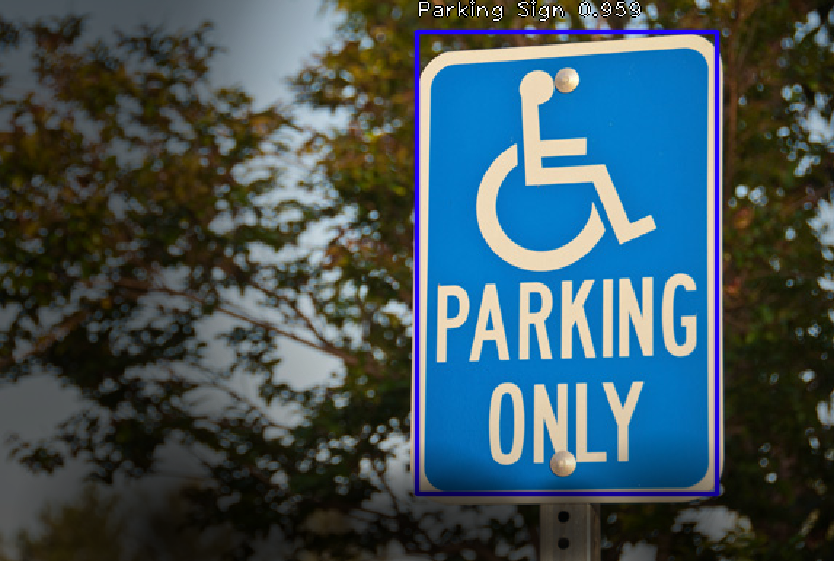
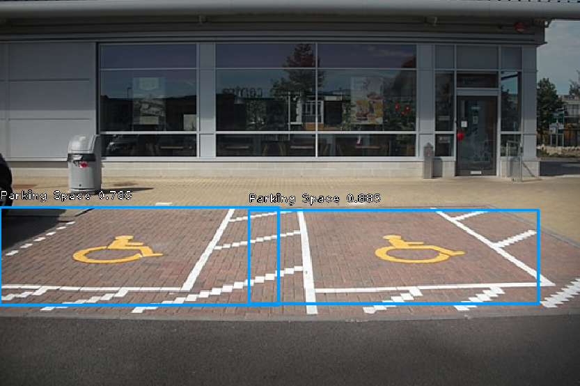

<div id="testscarousel" class="carousel slide" data-ride="carousel" data-interval="false">

        <!-- the "pages" the carousel has -->
        <ul class="carousel-indicators">
            <li data-target="#testscarousel" data-slide-to="0" class="active"></li>
            <li data-target="#testscarousel" data-slide-to="1"></li>
        </ul>
    
        <!-- the contents the "pages" have -->
        <div class="carousel-inner">
            <div class="carousel-item active">
                
                <div class="carousel-caption text-light" style="background: rgba(64, 87, 104, 0.6);">
                    <h3> For more check out our <a class="text-light" href="https://github.com/cornelg7/oxdnn"> github</a> </h3>
                </div>   
            </div>
            <div class="carousel-item">
                
                <div class="carousel-caption text-light" style="background: rgba(64, 87, 104, 0.6);">
                    <h3> For more check out our <a class="text-light" href="https://github.com/cornelg7/oxdnn"> github</a> </h3>
                </div>   
            </div>
        </div>
    
        <!-- the controllers (left/right arrows) -->
        <a class="carousel-control-prev" href="#testscarousel" data-slide="prev">
            <span class="carousel-control-prev-icon"></span>
        </a>
        <a class="carousel-control-next" href="#testscarousel" data-slide="next">
            <span class="carousel-control-next-icon"></span>
        </a>
    </div>